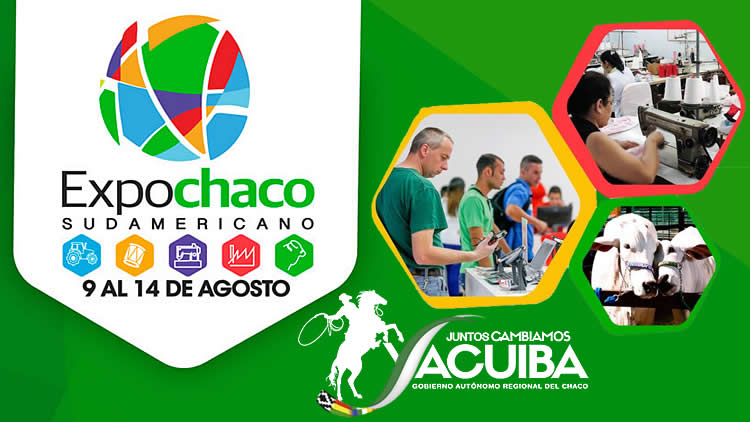
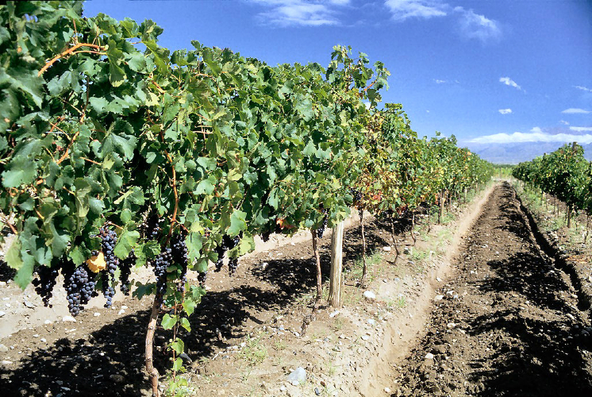

Expo-Chaco
La feria Expo Chaco Sudamericano 2016, se realizará en Yacuiba – Tarija del 9 al 14 de agosto que se constituye en un espacio de integración empresarial, comercial y cultural. Se espera la participación de delegaciones de sectores productivos de Argentina, Paraguay y Bolivia. El evento tiene como objetivo promocionar y difundir el potencial agropecuario e industrial de la región del Chaco.
Esta feria exposición se constituirá como una puerta de ingreso a las más grandes oportunidades de integración empresarial e industrial con la apertura de espacios de relaciones comerciales desde el sur de Bolivia al mundo. Participarán micros, pequeñas, medianas y grandes empresas regionales e internacionales. En este sentido, el gobernador de Tarija, Adrián Oliva, expresó su compromiso con esta iniciativa, ya que con ello se podrá plantear al país y a la macro región cuáles son los desafíos y oportunidades que tiene el chaco en los próximos años. Dentro de éstos se proyecta un desarrollo productivo en el que se promocionará las potencialidades de esa región más allá del gas. “Creemos que los empresarios y distintos gremios tienen que estar presentes y hacer de que esta feria se vaya fortaleciendo –dijo-. Así que vamos a apoyar al sector privado para que nos encontremos todos en Yacuiba hablando de lo que más necesita el departamento, que es el desarrollo productivo”. Al respecto, el subgobernador de Yacuiba, José Quecaña, refirió que las tres regiones chaqueñas mostrarán e intercambiarán su tecnología, genética, además de promocionar la producción. Es así que se verá la diversidad de iniciativas existentes en los distintos sectores. “Este evento también es un encuentro de autoridades de todo el chaco sudamericano –agregó Quecaña-. Hemos acordado que en la trichaco van a estar los gobernadores tanto de Salta, de Tarija, de Boquerón y todos los legisladores. Queremos ser vitrina y a la vez tener encuentros positivos para hacer normativas y hacer que el chaco sudamericano sea potencia a nivel mundial”. Del mismo modo, informó que se inaugurará el campo ferial que es el “más grande del sur de Bolivia”, ya que cuenta con 11 pabellones y cada uno de ellos puede albergar a 180 expositores. Al respecto, el secretario de Desarrollo Económico y Productivo de la Subgobernación de Yacuiba y gerente de la Expo Chaco, Jhilmo Cardozo, señaló que esta feria acercará a las personas y empresas. Y será un puente para generar movimiento económico y de negocios ya que dentro de ese contexto se busca construir una macroregión del Chaco Sudamericano.

Feria de la Uva
